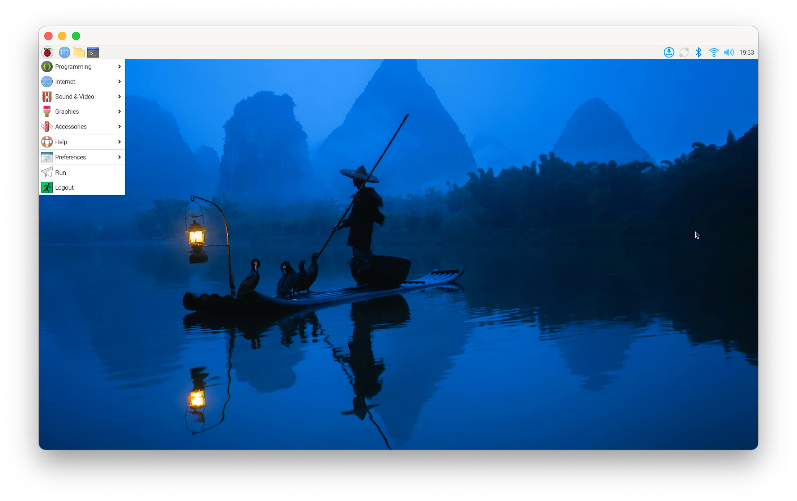

많은 경우 나는 특히 리눅스 컴퓨터를 모니터나 키보드 연결 없이 네트워크로만 접속하여 사용한다. 이런 컴퓨터를 새롭게 운영체제를 설치할 때 혹은 간혹 컴퓨터에 문제가 생겼을 경우, 네트워크로 접속하지 못하고 물리적인 키보드/비디오/마우스(KVM, Keyboard/Video/Mouse)를 사용해야 하는 경우가 있다. 키보드와 모니터를 컴퓨터가 위치한 곳(주로 서버실 등)에 설치해야 하는데 이것이 여간 번거로운 것이 아니고 서버실에서 작업하는 것이 불편하기도 하다1.
랩탑은 키보드/비디오/마우스를 가지고 있는 컴퓨터이다. 랩탑을 이용하여 저런 헤드리스(headless) 컴퓨터를 제어할 수 없을까? 여러 해 동안 가성비 있는 솔루션을 찾아왔다. ATEN CV211 같은 제품을 사용해도 되지만, 가격이 30만원이 넘어가 만만치 않고, HDMI를 지원하지 않고 VGA 인풋만 지원한다2.
그러던 중 올해 초 CH9329 + CH340UART/TTL 직렬 포트라는 것을 발견했다. 조금 조사한 바로는 CH9329는 시리얼 통신을 통해 명령을 내리면, 키보드와 마우스 인풋으로 변환하여 컴퓨터로 전송하는 USB 키보드처럼 동작하는 디바이스이고, CH340는 USB를 이용하여 CH9329와 통신하게 해주는 디바이스이다. 이를 USB HDMI 캡처 보드와 조합하면 간이(Ad-Hoc) KVM을 만들 수 있다고 생각하였다. 바로 구매하여 아래와 같이 설정하였다. 라즈베리파이를 제어하기 위해 Hagibis HDMI-USB 캡처보드, CH9329/CH340을 연결하고, 5V 파워를 이용하여 전원을 공급하였다. 노트북은 사용하던 맥북프로를 활용한다.
실제로 모니터는 비디오 인풋으로 들어오고, 시리얼 커멘드를 이용하면 키보드와 마우스를 제어할 수 있었다. 기존 여러 CH9329 제어 프로젝트가 있었지만, 별로 마음에 들지 않아 새로 만들게 되었다.
문제는 생각보다 어떤 시리얼 명령을 내려야 키보드와 마우스를 제어할 수 있는지 데이터시트 등을 구하기가 어렵다는 것이다. 온라인에 돌아다니는 데이터시트를 봐도 명령 코드 등을 잘 알 수가 없었다. 가장 도움이 되었던 문서는 “キーボード／マウス エミュレータ解説書“이다. 일본어를 모르기에 번역기를 돌려가며 만들었다.
소프트웨어 스택으로는 QT6를 사용했다. QT는 이 같은 프로그램을 만들기 위한 대부분의 기능을 제공한다. GUI, 키보드 입력, 마우스 입력 등은 GUI 프레임워크이기 때문에 당연하게 지원하고, 비디오 입력은 QVideoWidget, 시리얼 통신은 QSerialPort를 활용하면 쉽게 구현이 가능하다. 참고로 QML같은 것은 사용하지 않았다. 멋진 GUI를 만드는 것이 아닌, 창 하나에 화면 하나만 나오면 되므로 굳이 사용하지 않았다. 지금은 Mac을 사용하지만 추후 다른 OS를 이용하게 되더라도 아마 QT를 사용했기에 큰 어려움 없이 포팅이 가능할 것으로 보인다. 이번에 처음 QT를 사용해 보아 조금은 낯설었지만, 쉽게 적응할 수 있었다. 꽤 방대한 기능을 제공하기에 익숙해진다면 많이 유용해 보인다.
그렇게 만들어진 애플리케이션은 다음과 같다. 애플리케이션을 실행하면 아래와 같이 화면이 나타나고 키보드와 마우스 입력을 줄 수 있다. 마우스 드래그 등의 기능은 별로 필요하지 않아 따로 구현하지 않았다. 초기 셋업에는 충분한 기능이다.

나는 이를 라즈베리파이와 같은 하드웨어 초기 셋업용으로 사용하지만, 이 외에도 여러 용처가 있을 것 같다. 예를 들면, 데스크탑을 이용하여 머신러닝용 컴퓨터를 만들고 제어할 때 이 컴퓨터를 위해 별도의 모니터/키보드를 따로 두는 경우가 있다. 이때 이와 같은 장치를 사용하면 추가적인 모니터/키보드가 필요 없어지기에, 좀 더 깔끔한 책상 구성이 가능할 것이다.
소스코드는 다음 링크에서 확인할 수 있다. https://github.com/Pusnow/qKVM QT 사용법을 잘 모르고 하루이틀 만에 뚝딱 만들어 아주 어설프고 기능이 부족하기에3, 참고만 하시면 좋을 것 같다.
이를 위해 많은 서버는 iKVM등의 기능을 제공하는데 이 글의 초점은 라즈베리파이 등 고급 기능을 제공하지 않는 하드웨어이다. BIOS, 운영체제 설치 등의 작업을 할 수 있도록 out-of-band로 키보드, 비디오, 마우스를 사용할 수 있게 한다. ↩︎
VGA 인풋은 대부분의 서버가 지원하기 때문에 서버 관리 측면에서 유리하다. 다만, 본 글의 목표는 iKVM등의 고급 기능을 지원하지 않는 컴퓨터, 라즈베리파이, GPU 등이 탑재된 데스크톱, 미니 PC 등이다. 이 컴퓨터에서는 VGA 포트보다는 HDMI가 더 대중적이다. ↩︎
예를 들어 여러 비디오 인풋이 있을 때 선택할 수 없고, 기본 인풋만 이용할 수 있다. 또, Mac만 지원하며, 많은 설정이 하드코딩되어 있다. ↩︎